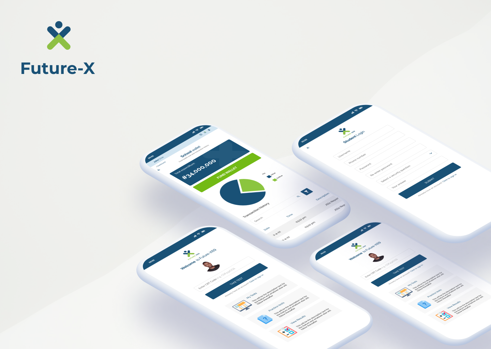

Testa is a cloud-based CBT platform designed for secondary school students in Nigeria. The app helps schools to easily conduct exams, mark, and analyze the results online without going through the stress of the traditional approach which involves printing large exam papers and manual marking of exam scripts.
I was the only product designer who worked on this project and my roles are as follows:
Most schools in Nigeria use the traditional method in conducting and marking their terminal exams. This method comes with so many disadvantages. Aside from the fact that schools spend so much money printing exam questions, they also put their teachers through a lot of stress by making them mark a large number of question papers manually.
Another disadvantage of this method is that it makes it easy for students to easily influence the marking process by offering bribes to teachers for marks. This is possible because the question papers are being marked manually and individually. Also, the traditional approach makes it difficult for schools to easily store and retrieve past questions of their schools because they have to deal with a lot of papers and file them carefully.
The problems above are what Testa was designed to solve. Testa makes it possible for teachers to easily set their questions online, keep them in question banks and use them any time they want. It makes it possible for a large number of scripts to be marked without teachers experiencing burnout. It makes it easy for schools to easily mark their exams without bias and analyze the results of exams without any stress.
I conducted qualitative user research at various schools to understand user behavior and also identify user pain points. I interviewed teachers and students by asking open-ended questions.
During the interviews, I avoided the use of video cameras which may distract the users and make them uncomfortable, but I recorded our conversations(with the consent of participants) and analyzed them carefully after each session.

The low fidelity prototype was tested with two group of users; the students and the teachers. Most of the students and teachers navigated the app with ease.
This design project taught me how to deliver great design within a short period without compromising quality.

{kind=link}
{kind=link}
{kind=link}
{kind=link}
{kind=link}
{kind=link}